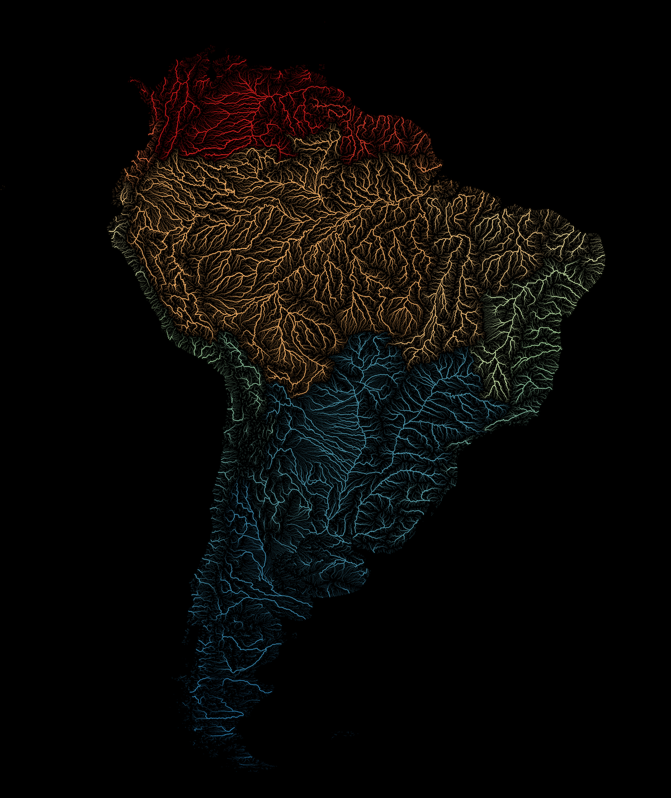

Grundlagen für Filterung und Gestaltung mit Ausdrücken (QGIS3)¶
Beitrag von: Steven Kim
Ausdrücke bieten leistungsfähige Möglichkeiten, Attributwerte, Geometrien und Variablen zu verändern, um Kartenobjekte schnell und einfach dynamisch zu modifizieren. Dieses Tutorial versteht sich als Einführung zu einigen gebräuchlichen Ausdrücken und ihrer Verwendung in der Kartenerstellung.
Überblick über die Aufgabe¶
Wir werden Ausdrücke benutzen, um Objekte unter Verwendung von Attributen aus einem Länder-Layer von Natural Earth zu filtern. Anschließend gestalten wir sie, um eine Karte von Südostasien zu erstellen, in der jedes Land in einer Grünschattierung dargestellt wird.

Beschaffung der Daten¶
Auf Natural Earth gibt es Shapefiles mit den administrativen Grenzen von Staaten. Auf der Download-Seite suchen wir nach der Option Cultural unter
Medium scale data.

Wir laden das Shapefile
Admin 0 - Countriesherunter. Die Dateine_50m_admin_0_countries.zipwerden wir für dieses Tutorial verwenden.

Der Einfachheit halber kann auch eine Kopie des Layers unter folgendem Link heruntergeladen werden:
Datenquelle [NATURALEARTH]
Arbeitsablauf¶
Wir suchen die Datei
Natural_Earth_quick_start.zipim QGIS-Browser und erweitern sie. Wir wählen die Dateine_50m_admin_0_countries.shpund ziehen sie in den Arbeitsbereich.

Der neue Layer
ne_50m_admin_0_countrieswird geladen und eine Weltkarte sollte angezeigt werden. Wir klicken auf Layergestaltungsfenster öffnen.

Wir wechseln die Darstellung vom Einzelsymbol zu Regelbasierend.

Mit Doppelklick auf die voreingestellte Regel öffnen wir den Dialog Regel bearbeiten.

Um einen Ausdruck für den Filter zu verwenden, klicken wir auf ε.

Wir befinden uns jetzt im Expression Builder. Dieser Dialog stellt die Hauptschnittstelle zur Erstellung von Ausdrücken dar und kann auf unterschiedliche Weise aufgerufen werden. Er enthält einen Eingabebereich auf der linken Seite, eine Funktionsliste in der Mitte und einen Hilfebereich auf der rechten Seite.

In der Liste in der Mitte erweitern wir , um die Felder des Layers
ne_50m_admin_0_countrieszu erkunden.

Wir wählen das Feld
SUBREGIONaus und klicken auf Alle eindeutigen im rechten Bereich, um alle eindeutigen Werte für die Unterregionen anzuzeigen.

Nach dem Erkunden der Werte wählen wir den Bereich Ausdruck auf der linken Seite, geben dort den Ausdruck wie folgt ein und klicken OK.
"SUBREGION" = 'South-Eastern Asia'
Jetzt sollte die Ansicht auf Südostasien beschränkt sein. Wir verschieben die Region ins Zentrum des Kartenfensters und zoomen hinein.

Wir haben nun einen Ausdruck zur Filterung von Objekten angewandt. Als nächstes wollen wir einen Ausdruck verwenden, um jedes Land aufgrund der Werte im Feld
MAPCOLOR7farbig darzustellen. Wir scrollen bis zum Bereich Symbol im Layergestaltungsfenster runter und wählen Einfache Füllung aus, um Gestaltungsoptionen wie Füllfarbe, Linienfarbe usw. anzuzeigen. Wir klicken auf den Button Datendefinierte Übersteuerung neben Füllfarbe und wählen Bearbeiten… aus dem Menü.

Dies wird den Dialog Expression Builder für die Füllfarbe anzeigen. Wir geben den folgenden Ausdruck ein:
set_color_part(ramp_color('Greens',scale_linear("MAPCOLOR7",1,7,0.2,1)),'alpha',100)
Dieser Ausdruck enthält mehrere Funktionen: set_color_part() für die Einstellung des Alpha-Kanals bzw. der Transparenz, ramp_color() für die Anwendung eines Farbverlaufs und scale_linear() zur Nutzung des Feldes MAPCOLOR7 für die Einstellung einer Farbe für jedes Land. In diesem Beispiel verwenden wir Grüntöne, setzen den Alpha-Kanal auf 100 von 255 und skalieren MAPCOLOR7 statt auf die Originalwerte von 1-7 auf 0,2-1, was den Farbverlauf ganz gut aussehen lässt.

Bemerkung
Die Daten des Layers von Natural Earth beinhalten mehrere Felder, die mit MAPCOLOR7, MAPCOLOR8 usw. benannt sind. Diese Felder enthalten numerische Werte, die zum Einfärben der Karte verwendet werden können, sodass aneinander grenzende Polygone nicht mit derselben Farbe dargestellt werden. Es gibt Versionen mit 7, 8, 9 oder 13 Farben.
Wir klicken auf OK, um den Dialog zu schließen. Im Dialog Regel bearbeiten ändern wir den Strichstil auf . Die Länder sollten jetzt in grün dargestellt sein.

Wir haben nun eine schön gestaltete Karte, die wir durch Filterung und die einfache Anwendung von Ausdrücken erzeugt haben.

If you want to give feedback or share your experience with this tutorial, please comment below. (requires GitHub account)